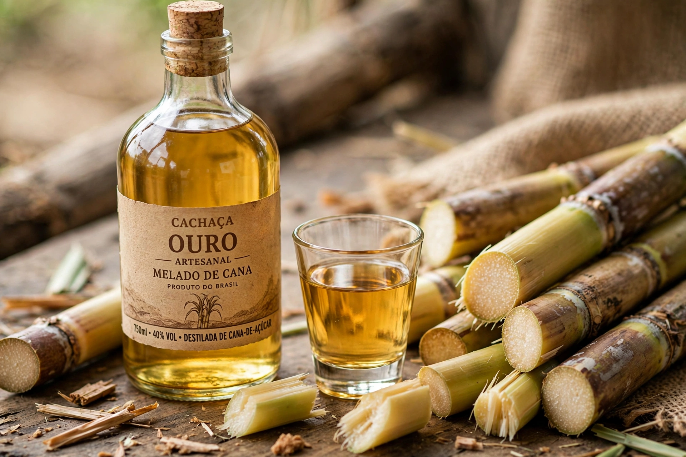

| Cachaça | |
 | |
| Type | Distilled spirit |
|---|---|
| Origin | Brazil |
| Introduced | 16th century |
| Alcohol by volume | 38–48% |
| Ingredients | Fermented fresh sugarcane juice |
Cachaça (pronounced [kaˈʃasɐ]) is a distilled spirit made from fermented fresh sugarcane juice. It is the most popular spirit in Brazil, where several billion litres are produced annually. Outside Brazil it is best known as the base spirit of the caipirinha cocktail.
Unlike most rum, which is typically made from molasses, cachaça is produced directly from fresh-pressed sugarcane juice, giving it a grassier, more vegetal character. By Brazilian law, cachaça must be produced in Brazil from fresh sugarcane juice, with an alcohol content between 38% and 48% by volume.
Sugarcane was introduced to Brazil by Portuguese colonists in the early 16th century, and distillation of the fermented juice followed soon after, making cachaça one of the first spirits produced in the Americas. It was initially a drink of enslaved people and the poor, and was sometimes used as currency in the slave trade. Over the 19th and 20th centuries its reputation grew, and it became a symbol of Brazilian national identity; 13 September is celebrated in Brazil as National Cachaça Day.
Fresh sugarcane is cut, pressed, and the juice fermented with yeast before being distilled, traditionally in copper pot stills for artisanal (alambique) cachaça, or in column stills for industrial production. Unaged cachaça is clear, while aged varieties rest in wooden barrels — including native Brazilian woods such as amburana, jequitibá and bálsamo — which impart colour and flavour.
Cachaças are commonly classified as branca (white, unaged or lightly rested), amarela (yellow, barrel-rested), and aged or premium (envelhecida), which must be matured in wood for at least one year. Well-known brands include Pitú, Ypióca, Leblon and Novo Fogo.